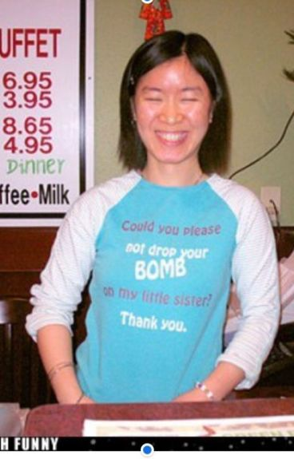

Sneak peek
-List of Mario and gaming memorabilia here
-List of Games, systems, and more here
-List of Books and Mags here
-Images of some of the above Google Drive folder
-Link to Gallien-Krueger 2000 catalog (personal scan)
-Link to Gallien-Krueger 2007 catalog (personal scan)
-Link to Jackson 2000 catalog (personal scan)
-Link to Jackson Performer Series catalog (personal scan)
-Link to Jackson AX/S Series flyer (personal scan)
-Link to Charvel San Dimas catalog (personal scan)
-Link to Jackson Stars 2008 catalog (personal scan)
Click here for my photos of guitars. Please note that most of these images weren't meant to document anything initially, just images I took at the time. Excuse poor camera work. See the album for individual comments.
Direct link to spreadsheet of specs (on hiatus) HERE Guests can add comments there also.
I call the world of my original characters the 'Slammerverse'. While 99% of these works from my childhood to now are offline, I will share here a few things of interest like this WIP 'bestiary'. I divide my stories in several eras: 'T-Bone Inc' era is little kid stuff, 2000s to 2004ish. 'Pirate era' was about middle school, 2005 to 2006. 'George Time' is middle school, 2006-late 2007. 'Party Heroes' era is high schoolish, 2008-2009ish. 'SRT' is high school and later, 2009 to 2016. 'Fanfiction era' would be anything beyond that as that's where most of my focus shifted, along with other post-school adult busy with life things.
Slammerverse tropes! (WIP) Note: references tons of off-line material..

'With Friends Like These': Summary (verbatim): (Tentative title.) A group a friends experience love, hate, and everything in between. (Yeah, this description is bound to change too)
Submitted on Wattpad (yeah I know), this is VERY drafty and from 2016. Yes, this is original fiction despite photo. We have a few chapters to show anyway. Note that the story was cleaned up and continued on in handwritten format. To slightly understand more, one of the characters has a split personality that I handle sorta realistically when I examine it years later. In other words, they appear a bit crazy as you'd imagine. Good thing the rest of our folks here are so zany it works- for a while.

'Please Don't Drop a Bomb On My Sister': Not really what it sounds like, but since I got your attention-
Summary (verbatim): Original fiction about the rival/siblings Jordan and Summer. (Also from "with friends like these") story kind of based off of Engrish shirt in the picture. Jordan would do anything to save a buck, Summer would do anything to keep Jordan in check.
Like the other story, this was worked on off-line and this one even rewritten and completed in a journal of mine. I'll see what I can do about showing the best version of this. For now, enjoy this string of antics.

Credits to 'wackko200' or Latisha Banks, responsible for much of the iconic Koopaling art.
This was a Koopaling-centric Mario fan site thriving in the web 1.0 era. I loved browsing the art, reading the 'fun fiction', 'scribbles', and reviews, and playing the browser games. There was so much more that I never delved into, contests, interviews, the forums and more. Oh, and we'll come back to the forums. Inspired by the Neglected Mario Character sprite comics, my username was 'super_stanly', aka Stanley the Bugman. Notable events include me contributing to the site four times, which at the time meant getting personal feedback from webmaster Lemmy, having my dislike of Super Mario Sunshine validated, and spending about one day on the forums before I got into a one sided spat.
No really! I didn't mean to! I offended a user named Fireball with some analphabetic post I unfortunately can't archive, because it would be hilarious I'm sure. From there I joined Nintendoland, discussed below. Enjoy my contributions, starting with my Mario Kart Wii review. Dated 5/1/ 2009, my grammar and typing is atrocious, but I really couldn't type well at that point. My fault, oh well. Check it out! Actually don't. Well, if you came this far I can't stop ya.
Yes, that's me probing on that right top corner. (click for bigger)
Long before the WiiU game, Nintendoland was an old school Nintendo fansite among many. I remember browsing on some of the pages as early as 2003ish and joined the forums right after I made a little mess on the Lemmy's Land forums. (see above) I don't have exact dates, but the name Mechayoshi here predates my using it on Deviantart (though I've gotten that backwards at times because I was definitely inspired by a now deleted user 'MechaBowser' there.) I'm guessing 2009, right before my house upgraded from dialup internet. I will cheat a bit and link to here, some tumblr posts consolidating a few things. Note that that black layout below is the revision which lasted only for a year or so, expunged all of our history from the old site, and never went anywhere in general. Besides being friends with a few of them on the Nintendo Online Service and knowing of a Discord, I don't have much else new to add. This is here for posterity, a missing piece of my early online presence.

{kind=link}